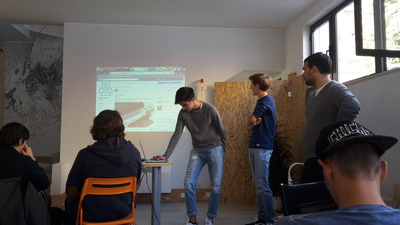

L’ 11 novembre la nostra classe si è recata presso Impact Hub per partecipare alla settima attività riguardante alternanza scuola-lavoro. In questa giornata abbiamo riflettuto ed affrontato problemi reali che le aziende potrebbero riscontare. Siamo stati divisi in gruppi,ognuno
basato su un tipo di azienda caratteristica del nostro territorio;
il nostro gruppo si e’ occupato del settore tessile.

Abbiamo iniziato il nostro lavoro pensando a più idee possibili e successivamente abbiamo
discusso quelle realizzabili.
Il nostro gruppo ha optato per creare una maglietta su misura da comprare online.
Per attirare le persone abbiamo pensato a manifesti pubblicitari nei quali veniva spiegata la nostra attività.
Alla fine della giornata tutti i gruppi hanno presentato le loro idee seguite dalla premiazione.